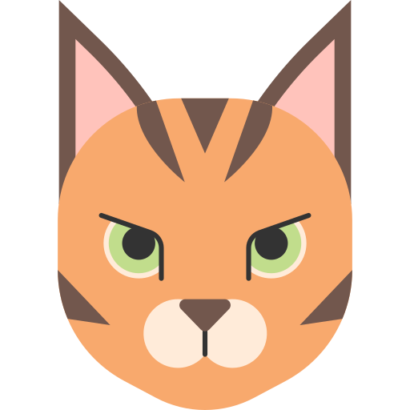

Construye el cuadro clínico
Cargando…
Perro
Base canina
✓

Gato
Base felina
✓
Síntomas y hallazgos
0 seleccionados
03 · RESULTADOS
Diagnósticos diferenciales
Ver matriz
Selecciona al menos un hallazgo y pulsa
Analizar coincidencias
.
×
EVIDENCIA EN TU SELECCIÓN
Diagnóstico